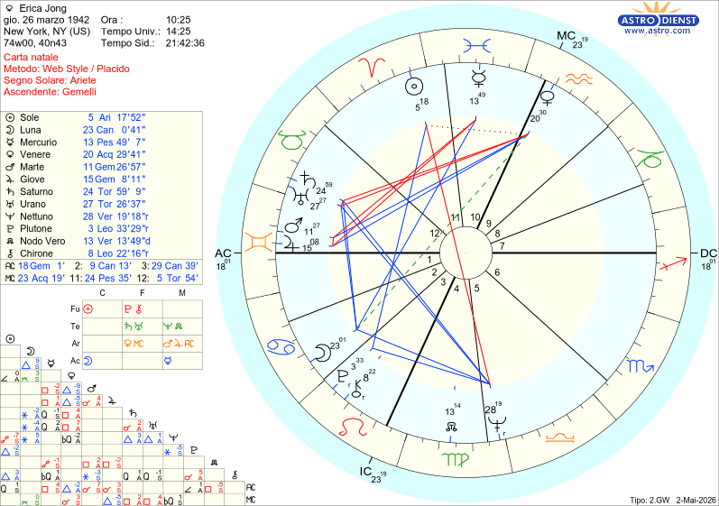

Il cielo racconta
Erica Jong
New York, 26 marzo 1942
TEMA NATALE DI ERICA JONG
NATA IL 26/03/1942 ALLE ORE 10:25 A NEW YORK
ARIETE ASCENDENTE GEMELLI

✈️Erica Jong: il Cielo di "Paura di Volare" e la Profezia dei Treni Erotici
Nel 1973, Erica Jong ha scatenato un vero e proprio terremoto culturale con il romanzo Paura di volare. Attraverso la protagonista Isadora Wing, ha sdoganato la celebre "scopata senza cerniera", rivendicando il diritto delle donne a un erotismo libero, spontaneo e senza sensi di colpa.
Ia società dell' epoca rimase sotto shock. Ma la cosa che ti lascerà a bocca aperta è un'altra: l'immaginazione erotica debordante di Erica e i dettagli più intimi della sua ispirazione erano già stampati nella sua mappa astrale.
1. Il Sole dell'Amazzone contro il Patriarcato
Erica Jong è stata la paladina di un femminismo travolgente, capace di lottare per l'uguaglianza senza però odiare gli uomini (che ha sempre dichiarato di amare, specchiando il suo potente Sole in Ariete in trigono a Plutone).
La firma delle stelle: Il suo Sole si trova nella Undicesima Casa (il settore dell'uguaglianza, dell’anticonformismo e del rifiuto delle gerarchie) opposto a Nettuno nella Quinta Casa (che rappresenta i valori del patriarcato tradizionale).
Erica ha tradotto questa configurazione geometrica in una missione letteraria: far saltare in aria la secolare e ipocrita dicotomia maschile che divide le donne in "madonne o prostitute".
2. Fantasie nell'ombra: il motore segreto del sesso
Da dove nasceva quell'urgenza viscerale di parlare di sesso senza filtri e con una sfacciata ironia?
Il segreto stupefacente: Nel suo tema c'è una congiunzione esplosiva: Marte e Giove uniti nei Gemelli nella Dodicesima Casa (il regno dell'inconscio,dei segreti, ma anche il regno di Nettuno e quindi della fantasia). Giove dilata tutto ciò che tocca, e unito a Marte in Gemelli ed in dodicesima casa crea un' interesse erotico debordante intellettualizzato e fantasioso, che ha vissuto a lungo nell'ombra prima di esplodere sulla pagina scritta.
A darle lo strumento perfetto ci ha pensato l'Ascendente Gemelli: una scrittura ironica, brillante e leggera, capace di far digerire al mondo idee rivoluzionarie con il sorriso sulle labbra.
3. La scrittura come unica via d'uscita
Crescere con fantasie così audaci in una società giudicante le creò un senso di straniamento. Un Nettuno opposto al Sole che le faceva sentire di "non appartenere a nessun posto".
La via d'uscita era già scritta: il Sole in Undicesima Casa in trigono a Plutone in terza casa, indicava che l'unico modo per far brillare il suo Io anticonformista era la scrittura. Essendo Plutone il governatore della Sesta Casa (il lavoro) che è infatti occupata dallo Scorpione (il segno del sesso), il destino ha emesso la sua sentenza: Erica avrebbe trasformato l'erotismo nella sua professione quotidiana.
4. Il paradosso di Isadora: indipendente ma vulnerabile
Il femminismo di Erica Jong non è mai stato freddo o ideologico, ma profondamente umano. Nel libro, Isadora vuole essere libera, ma trema all'idea di perdere la stabilità del matrimonio.
La precisione da brividi: La sua Venere in Acquario (l’amore ultra-indipendente e anticonformista) subisce la quadratura di Saturno in Toro (il bisogno di legami solidi, di nido e di sicurezze materiali). Erica ha semplicemente descritto la verità sulla pelle di milioni di donne: la difficile coesistenza tra il desiderio di libertà e il bisogno di essere protette.
5. Il colpo di scena finale: la Profezia dei Treni
Questa è la chicca astrologica che ti farà saltare sulla sedia. Nella sua autobiografia, Erica Jong ha rivelato che l'ispirazione per scrivere Paura di volare le venne sui treni, che prendeva settimanalmente per andare dall'analista, e che fin da giovane i treni le stimolavano incredibili fantasie erotiche.
La precisione chirurgica del cielo: Nel suo tema, l'Ottava Casa (il settore dell'erotismo) è interamente occupata dal segno del Capricorno.
Tra i suoi tantissimi significati simbolici, il Capricorno governa proprio le grandi strutture ingegneristiche, le ferrovie e... i treni! L'universo aveva letteralmente collegato il suo erotismo ai binari ferroviari prima ancora che lei comprasse un biglietto.
Il verdetto delle stelle
Erica Jong non ha semplicemente scritto un best-seller: ha obbedito alla geometria del suo cielo. Ha preso le sue fantasie segrete (Dodicesima Casa), le ha messe sui binari del Capricorno (Ottava Casa) e le ha trasformate in un manifesto di liberazione per le donne di tutto il mondo.
È incredibile pensare che persino l'ispirazione erotica legata ai viaggi in treno fosse già geometricamente scritta nel suo Capricorno in Ottava casa, vero?